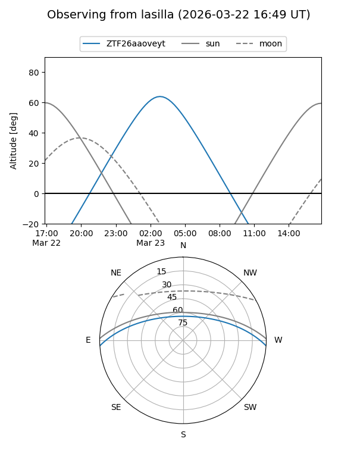
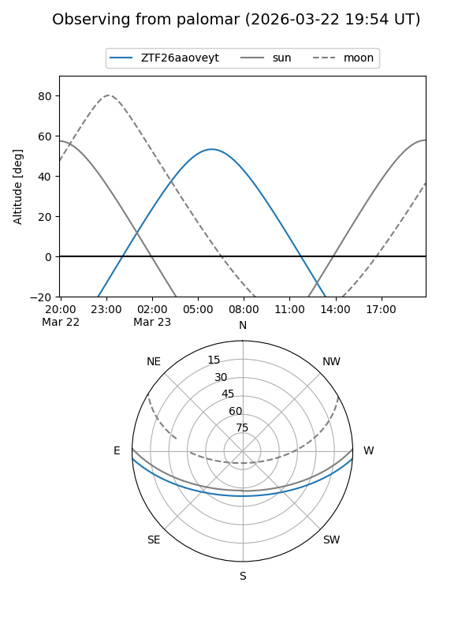

ZTF26aaoveyt
Target ZTF26aaoveyt at 2026-03-23 08:33
Aliases and brokers:
FINK: link
Lasair: link
ALeRCE: link
alt names
ZTF26aaoveyt (ztf,fink_ztf)
Coordinates:
equatorial (ra, dec) = 152.0282,-3.12642
equatorial (HMS+DMS) = 10:08:06.76,-03:07:35.11
galactic (l, b) = (243.9810,+40.35544)
Flags:
Photometry:
last ztfg=17.62
1 ztfg detections
Lightcurve
Visibility


Additional plots